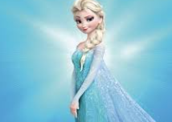

Name: ELSA
Role:
Princess of Arendelle and heiress to the throne
Bio:
A powerful ice and snow queen, the elder sister of Anna, and the former Queen of Arendelle, who struggles to control her magical abilities, initially isolating herself due to fear of harming others, but ultimately learns to embrace her powers and live in harmony with her kingdom and sister; based loosely on the Snow Queen from Hans Christian Andersen's fairy tale.
Name: ANNA
Role:
the optimistic and determined younger sister of Elsa
Bio:
When Elsa accidentally plunges the kingdom into eternal winter, Anna embarks on a perilous journey to bring her sister back and mend their fractured relationship, ultimately becoming the Queen of Arendelle after Elsa chooses to remain in the Enchanted Forest with her ice powers.
Name: RAPUNZAL
Role:
Princess of Corona
Bio:
Rapunzel is a spirited, smart, clever, kind, playful, and a very adventurous girl in her late teens, though a bit naive. However, she is not afraid to stand up for herself or others when the situation calls for bravery.